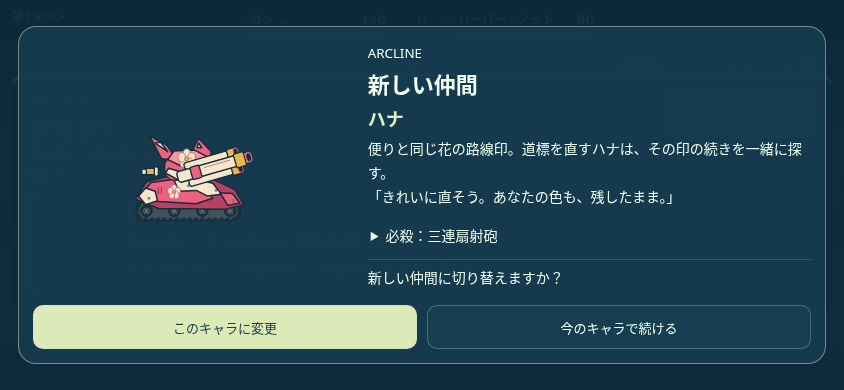

UPDATE 0.13.0 / 2026.11.01一機の出発が、
仲間との冒険へ。
ガンが拾った、一通の便り。道を開くたびに、届けたいものを持つ仲間と出会う。100の地形と、それぞれの一射で、止まった世界をもう一度。
新しい旅をはじめる →
出会った仲間が、次の道を変える。
ハナと出会う5面、コロと進み始める10面。空を見上げるソラ、反射の道を案内するリコ、長い射線を開くリン。仲間になる理由と、加入直後の見せ場をつなぎ直しました。所有している機体は、戦闘中も自分の照準の手番に切り替えられます。
5面 ハナ10面 コロ15面 バン20面 ソラ25面 ヒバリ30面 リコ40面 モグ60面 リン80面 ユイ
機体を変えても、現在HPの割合・敵・地形・行動数・必殺残数はそのまま。加入時は、その機体に切り替えるかを選べます。

必殺は、ここぞの一手。
通常戦は自分の第2・4・6ターンに1発ずつ。中ボス・大ボスは最初から3発。残数と次の解放を画面に表示します。
100面を、一面ずつ。
山、崖、浮島、梁、割れる門。地形の部品と環境装置を組み合わせ、後半は「先に何をするか」を考える道へ。
迷わず、続きを。
タイトルは冒険の続きが中心。設定と旅の記録は、必要な項目を開く形へ。車体は歩いた方向を保ち、砲身だけ後ろを狙えます。
世界も、返事も、つながっていく。
一機のプロローグから9回の出会いへ。30面と60面の幕間も、新しい仲間が増える意味を伝える内容に。各面の復旧、中ボスの手掛かり、大ボス後の区間復旧、四場面のエピローグまで、旅を一つの物語としてつなぎます。
紹介サイトの反射・破壊・転移のサンプルも、本番の物理で動く手順へ更新。10機の通常弾、必殺技、性格、加入する段階を、同じセクションで見比べられます。
仲間たちを知る →